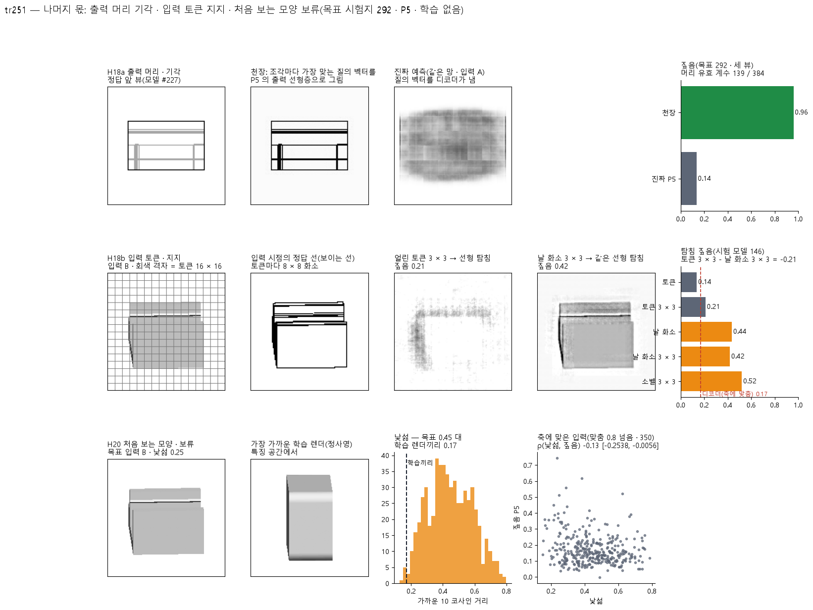

실험 m1_tr0251_h018a_해상도낯섦
목표 G1.1a 한 장 → 3 면도 · G1.1 사진 → 3 면도(중간 표현) · G1 첫 제품 — 피규어 · 메카 사진 여러 장 + 치수 → 숨은선 3 면도 + 파츠별 CAD · G0 임의의 이미지 → CAD 코드 · 빌린 가정 4: 흰바탕 · 렌더화풍 · 정사영 · 시점앎 · 갚는 계획: 학습 없음 · 판정은 목표 시험지(원화CAD짝 292 렌더) — 흰바탕 · 렌더화풍 · 시점앎은 실물 사진으로 그 뒤 · 정사영은 원근 렌더로 그 뒤 · 목표 시험지 값: 안 잼 (!)
축에 맞은 입력도 짚음 0.17 인 나머지 몫은 출력 머리(H18a) · 입력 토큰(H18b) · 처음 보는 모양(H20) 중 어디서 오나?
판정 · H18a 기각(머리는 정답을 거의 그대로 그릴 수 있음 · 천장 짚음 0.96 · 선 F 1.0) · H18b 지지(토큰에서 선형으로 꺼낸 선 자리 0.14 ~ 0.21 이 날 화소 0.42 ~ 0.52 보다 크게 낮고 디코더 출력 0.13 ~ 0.17 과 같은 수준) · H20 보류(목표 전체가 학습에서 멀지만 거리와 짚음의 관계는 약함) — 나머지 몫은 얼린 마지막 층 토큰에서 선 자리가 이미 줄어든 것 · 다음: 같은 탐침을 중간 층에(여러 층 특징이 손잡이인지) · 날 화소 작은 합성곱 갈래
| 가설 | 주장 | 결과 | 근거 |
|---|---|---|---|
| H18a | 출력 머리가 병목 — 질의 하나가 선형층 하나로 16 × 16 조각을 그려서, 가는 선 · 여러 선이 한 조각에 들면 그려낼 수 없다 | 기각 | 천장 3 면도 선 F 1.0 · 진짜 P5 짚음 0.135 · 머리 특이값 4.35 · 1.09(10 번째) · 0.073(100 번째) · 0.003(384 번째) · 유효 계수 139 / 384 |
| H18b | 얼린 토큰(14 화소 조각)이 자기 시점의 선 자리를 잃는다 — 날 화소에는 있는 선 자리가 토큰에는 없다 | 지지 | 시험 모델 146 · 입력 시점 선 지도 짚음 — 토큰 0.138 · 토큰 3 × 3 0.212 · 날 화소 0.436 · 날 화소 3 × 3 0.419 · 소벨 3 × 3 0.521 · 람다 토큰 10,000(고른 범위 끝) · 날 화소 1,000 |
| H20 | 처음 보는 모양 — 생성기 기본 도형만 배워서, 학습 렌더와 먼 입력일수록 평균 모양을 칠한다 | 보류 | 목표 낯섦 평균 0.446 · 학습 렌더끼리 0.171 · 전부 ρ -0.104 [-0.189, -0.023] · 맞춤 0.4 아래 ρ -0.079 [-0.180, 0.024] · 축에 맞은 입력 350 |
분석
한 줄로
물음: 입력이 출력 축에 맞아도 짚음이 0.17 에 머무는 나머지 몫은 출력 머리, 얼린 입력 토큰, 처음 보는 모양 중 어디서 오나?
답: 얼린 입력 토큰이다(H18b 지지). 같은 선형 탐침으로 입력 시점의 선 지도를 그리게 하면 토큰은 0.14 ~ 0.21, 날 화소는 0.42 ~ 0.52 였다. 토큰 쪽 값은 디코더 출력(0.13 ~ 0.17)과 같은 수준이다. 출력 머리는 정답을 거의 그대로 그릴 수 있어 병목이 아니다(H18a 기각). 처음 보는 모양은 보류다(H20).
왜 이 실험을 했나
tr250 에서 입력이 출력 축에 맞으면 더 짚었지만, 그래도 짚음은 0.17 이었다. 망을 까 보니 뷰마다 질의 64 개(8 × 8)가 있고, 질의 하나가 선형층 하나로 16 × 16 조각을 그린다. 입력은 얼린 DINOv2 토큰 16 × 16 이다. 그래서 「해상도」 를 출력 쪽(H18a)과 입력 쪽(H18b)으로 나누고, 학습 렌더와 먼 모양(H20)과 함께 갈랐다.
바꾼 것 하나
학습은 없다. 셋 다 재는 법만 새로 만들었다.
- 천장(H18a): 정답 조각마다 가장 잘 맞는 질의 벡터를 구해 P5 의 출력층으로 다시 그린다.
- 탐침(H18b): 입력 카메라에서 본 정답 선 지도를 얼린 토큰 · 날 화소 · 소벨에서 같은 선형 회귀로 그린다. 모델 반으로 배우고 나머지 반으로 잰다.
- 낯섦(H20): 얼린 특징 공간에서 학습 렌더 표본 6,000 장과의 거리를 잰다.
결과

| 결과 | 판정선 | 판정 | |
|---|---|---|---|
| H18a 천장 짚음 | 0.96 [0.960, 0.961] · 선 F 1.0 | 0.8 넘으면 기각 | 기각 |
| H18b 토큰 3 × 3 − 날 화소 3 × 3 | −0.21 [−0.22, −0.20] | −0.10 아래면 지지 | 지지 |
| H20 축에 맞은 입력의 낯섦 ↔ 짚음 | −0.13 [−0.25, −0.01] | −0.25 아래면 지지 | 보류 |
짚음은 tr249 에서 자 검사를 통과한 자다(정답 1.0 · 2 화소 굵힘 0.43 · 다 칠함 0).
왜 이렇게 나왔나
확인한 것
- 출력 머리는 디코더가 알맞은 벡터만 내면 정답 3 면도를 선 F 1.0 으로 그린다. 그러니 문제는 머리가 아니라 디코더가 내는 벡터다.
- 그 벡터의 재료인 토큰에서는 선 자리가 이미 크게 줄어 있다. 토큰 탐침(0.14)이 디코더 출력과 같은 수준이고, 같은 탐침에 날 화소를 주면 0.42 ~ 0.52 다. 정보는 그림에 있고, 토큰에서 줄어든다.
- 모델 #227 에서 토큰 탐침은 흐린 윤곽만 그렸다. 디코더 출력과 닮았다.
- 목표 시험지 전체가 학습 렌더에서 멀었다(같은 셈으로 0.45 대 0.17). 그러나 그 안에서 거리와 짚음의 관계는 약했다.
짐작 (아직 확인 안 함)
- 얼린 DINOv2 의 마지막 층은 14 화소 조각 안의 선 자리를 버린다. 기본 도형(생성기)에서는 큰 면 · 모서리만으로도 그릴 수 있어 버텼지만, 디테일이 많은 피규어에서는 모자란다.
- 중간 층에는 선 자리가 더 남아 있을 수 있다(조사 — 여러 층 특징이 깊이 · 경계를 올림).
한계
- 선형 탐침이다. 비선형으로 담긴 정보는 보지 못한다. 토큰의 람다는 고른 범위의 끝(10,000)이었다.
- 탐침 과제(입력 시점 선)는 출력 3 면도와 다르다(옮기기가 없다).
- 이번에는 흐름도를 돌리기 전에 보내지 않았다(내 절차 빠뜨림). 판정 기준은 결과 전에 카드에 적었다.
배운 것과 다음
덩어리의 나머지 몫은 얼린 마지막 층 토큰에서 선 자리가 이미 줄어든 것이다. 출력 머리는 충분하다.
- 같은 탐침을 DINOv2 중간 층(예: 4 · 8 층)에 — 선 자리가 남아 있으면 여러 층 특징이 손잡이다(GPU 추론 · 학습 없음).
- 날 화소 작은 합성곱 갈래(ViTMatte 꼴)를 디코더에 — 그림에 있는 선 자리를 직접 넣는다(학습 필요).
- 같은 탐침을 생성기 렌더에서 — 토큰이 거기서도 낮은데 망이 잘 그린다면, 기본 도형에서는 모양 사전 지식으로 버틴 것이다.
실험 기록
- 카드 · 해상도251.py(토큰 · 입력선 · 머리천장 · 탐침 · 낯섦 · 재기 · 그림) · 잼.json · 결과.png · 원본 out/설명/캐드부품/모델251
- 11-19 탐침이 12 GB 상한에 걸려 멈춤 → 정규 방정식을 묶음씩 쌓도록 고침